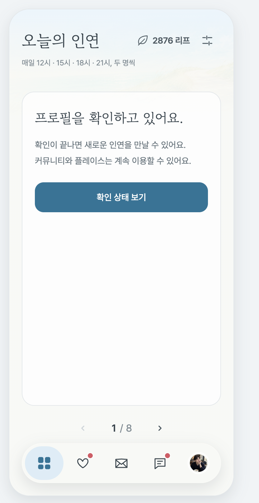

인연 홈 · 프로필 확인 중
가입을 마치고 프로필 확인을 기다리는 동안의 인연 홈이에요. 지금은 카드가 화면 높이만큼 늘어나 버튼 아래가 비어 있고, “확인 중”이라는 움직임이 없어요. 아래 1/8 넘김도 그대로 남아 있어요. 앱은 아직 바꾸지 않았어요. 폰의 제목 줄과 하단 메뉴는 실제 앱 캡처예요.
지금 비어 보여요

버튼 아래 절반이 비어 있고, 무엇이 진행 중인지 · 언제 끝나는지 알 수 없어요. 넘길 카드가 없는데 1/8이 보여요.
V1 · 단계로 보여 주기 추천
확인 중
프로필을 확인하고 있어요
확인이 끝나면 첫 인연이 도착해요. 끝나는 대로 알림으로 알려 드릴게요.
- 가입과 소개 작성11월 13일 마쳤어요
- 사진 · 소개 확인 중사진 속 얼굴과 소개 글을 살펴보고 있어요
- 첫 인연 도착매일 12시 · 15시 · 18시 · 21시
세 단계로 지금 위치를 보여 줘요. 가입과 소개 작성 ✓ → 사진 · 소개 확인 중(하늘색 점이 숨 쉬듯 깜빡) → 첫 인연 도착(공개 시간). 카드 높이를 내용에 맞추고 1/8은 숨겨요. “확인 상태 보기” 대신 할 수 있는 일(내 소개 미리보기 · 익명 이야기)을 바로 둬요.
V2 · 진행 막대 + 기다리는 동안
확인 중
프로필을 확인하고 있어요
확인이 끝나면 첫 인연이 도착해요.
끝나는 대로 알림으로 알려 드릴게요
기다리는 동안
카드는 짧게 줄이고 끝없이 흐르는 진행 막대로 “하는 중”을 보여 줘요. 남은 자리는 “기다리는 동안” 할 수 있는 두 줄로 채워요. 가장 정돈돼 보이지만, 막대는 끝을 알 수 없어서 오래 보면 답답할 수 있어요.
V3 · 현상 중인 내 첫 장
현상 중인 내 첫 장
프로필을 확인하고 있어요
확인이 끝나면 내 사진이 선명해지고, 첫 인연이 도착해요.
카드 자리를 그대로 두고 내 사진이 흐릿하게 천천히 일렁여요(현상 중). 승인되면 선명해지고 첫 인연이 도착한다는 이야기라 야화의 필름 컨셉과 가장 닮았어요. 대신 무엇을 확인 중인지 · 다음에 무엇이 오는지는 덜 분명해요.